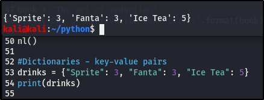

Dictionaries.
Dictionaries are Python’s implementation of a data structure that is more generally known as an associative array. A dictionary consists of a collection of key-value pairs. Each key-value pair maps the key to its associated value.
You can define a dictionary by enclosing a comma-separated list of key-value pairs in curly braces ({}). A colon (:) separates each key from its associated value.
Dictionaries and lists share the following characteristics:
- Both are mutable.
- Both are dynamic. They can grow and shrink as needed.
- Both can be nested. A list can contain another list. A dictionary can contain another dictionary. A dictionary can also contain a list, and vice versa.
Dictionaries differ from lists primarily in how elements are accessed:
- List elements are accessed by their position in the list, via indexing.
- Dictionary elements are accessed via keys.

Example of a dictionary
So the drink is your key and the price is your value, hence the key-value pair. There can be multiple values to a single key.

Dictionary with single key to multiple values.
What if we wanted to add another key-value pair, how do you think we'd go about that? Lets try that with our employee example, we'll add a new department.
There are multiple ways to add new key-value pair, here's one way:

OR

In a situation where a value has changed, we can update the value in our dictionary. Lwts use the drink example:

The price for the Ice Tea got updated from 5 to 7.
W can also get a particlar item out from our dictionary, instaed of printing out all the information. Here's how we can go about that:

NB:- Lists have brackets []
- Tuples have parenthesis ()
- Dictionaries have curly braces {}
This is one of those areas in Python you won't need or see in this course but it's also a very valuable thing to know and be able to tellthem apart, if and when you read any code.